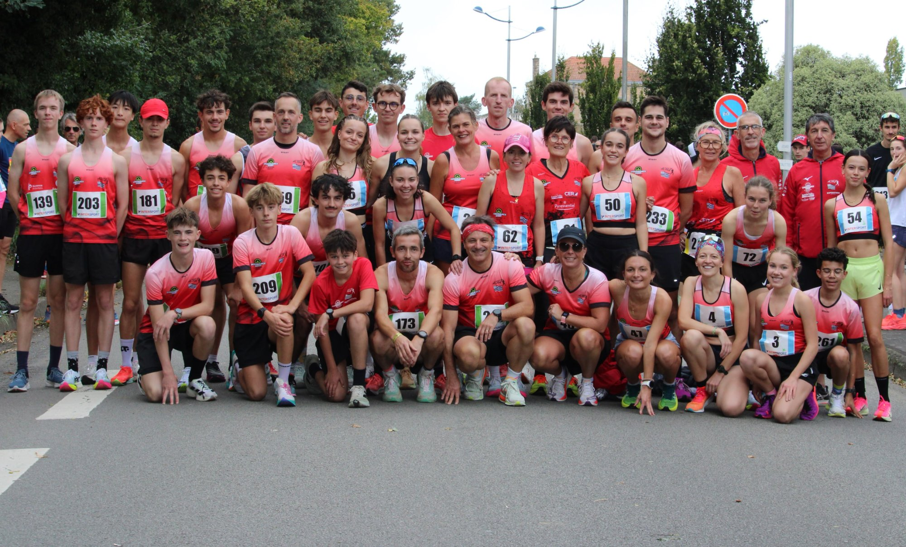

// Photos
Photos en compétition et avec le club ACRLP Pontivy.

Délégation du club lors des Marronaises de Redon.

En compétition sur piste
// Athlète · ACRLP Pontivy
Sprint & demi-fond — 4 ans de compétition, toujours en quête de performance.
DécouvrirAthlète en compétition depuis 4 ans au sein du club ACRLP Pontivy, je me spécialise dans les épreuves de sprint, du 60m au 400m, avec une pratique complémentaire en demi-fond sur 5 km.
Je concours à un niveau régional et m'entraîne 3 fois par semaine — le mardi, le jeudi et le samedi.
La discipline sportive que j'ai développée se reflète directement dans mon travail : meilleur contrôle de soi, canalisation.
| Mardi | Séance de fractionné ou footing |
| Jeudi | Séance de sprint |
| Samedi | Séance d'intensité |
| Club | ACRLP Pontivy |
| Niveau | Régional |
Cliquez sur le bouton pour afficher mes records actuels.
| Épreuve | Record |
|---|---|
| 60 m | 7''77 |
| 100 m | 12''34 |
| 200 m | 25''27 |
| 400 m | 57''83 |
| 5 km | 18'52'' |
Battre mon record personnel et passer sous la barre des 57 secondes.
Passer sous les 18 minutes sur 5 km, améliorer mon record actuel de 18'52''.
Photos en compétition et avec le club ACRLP Pontivy.

Délégation du club lors des Marronaises de Redon.
En compétition sur piste